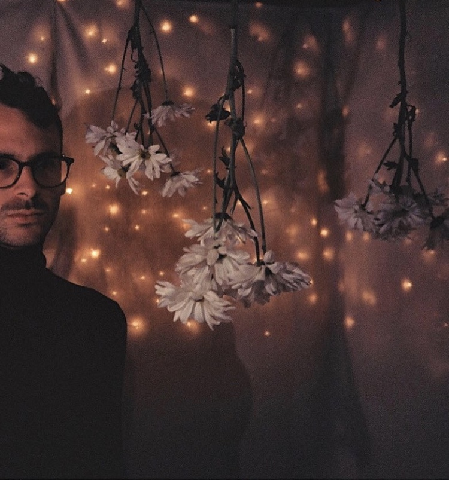

Music
 I spend a lot of my time absorbed in music and music-related themes around the band. At times, I spend half the year on tour. It helps that I love to travel. I like to take a personal trip once a year to rid myself
of human interaction. These are usually my favorite times. In the off-season I tend to be rather home-bodied. I spend most of that time with my cat and best friend, Princess Haru. We do everything together. I've been playing electric
guitar for eleven years. I started at the age of nine, playing gospel music in a family style southern Pentecost community. As my teenage years crept in, I wanted to play lounder, more agressive, abstract music. That, with the
introduction of the secular world, opened the flood gates of musical input and output. I met Kyle Craft in my early twentys and participated in numerous grinding D.I.Y. tours until he eventually landed a deal with Sub-Pop records in
Seattle, Washington. With the support of a label and agency, music has taken me to nearly every part of the United States supporting and headlining, as well as the U.K. and Europe. The touring lifestyle is not something I'd recommend,
unless you know undoubtedly it's something you have to do. Tips for the road? Drink water. Dont complain.
I spend a lot of my time absorbed in music and music-related themes around the band. At times, I spend half the year on tour. It helps that I love to travel. I like to take a personal trip once a year to rid myself
of human interaction. These are usually my favorite times. In the off-season I tend to be rather home-bodied. I spend most of that time with my cat and best friend, Princess Haru. We do everything together. I've been playing electric
guitar for eleven years. I started at the age of nine, playing gospel music in a family style southern Pentecost community. As my teenage years crept in, I wanted to play lounder, more agressive, abstract music. That, with the
introduction of the secular world, opened the flood gates of musical input and output. I met Kyle Craft in my early twentys and participated in numerous grinding D.I.Y. tours until he eventually landed a deal with Sub-Pop records in
Seattle, Washington. With the support of a label and agency, music has taken me to nearly every part of the United States supporting and headlining, as well as the U.K. and Europe. The touring lifestyle is not something I'd recommend,
unless you know undoubtedly it's something you have to do. Tips for the road? Drink water. Dont complain.
Film
There's something incrediably romantic about film photography. Perhaps I'm drawn to its uncertainty and unique perspective- an exercise in patience. As the film processes you are alotted enough time to forget before you sort through the ashes. Although I'm behind the lens, I experience the photos as someone else. I'm facinated by the juxtoposition of the familiar and the forign. I mostly shoot with 35mm vintage range finders, my favorite side arm being an Olympus xa with an A11 flash attachment. I tend to rotate between Ektar100 and Kodak Portra 400, low speed. I shoot a lot of film while on tour, I plan to make a photography book of my travels over the years. No words, just photographs.